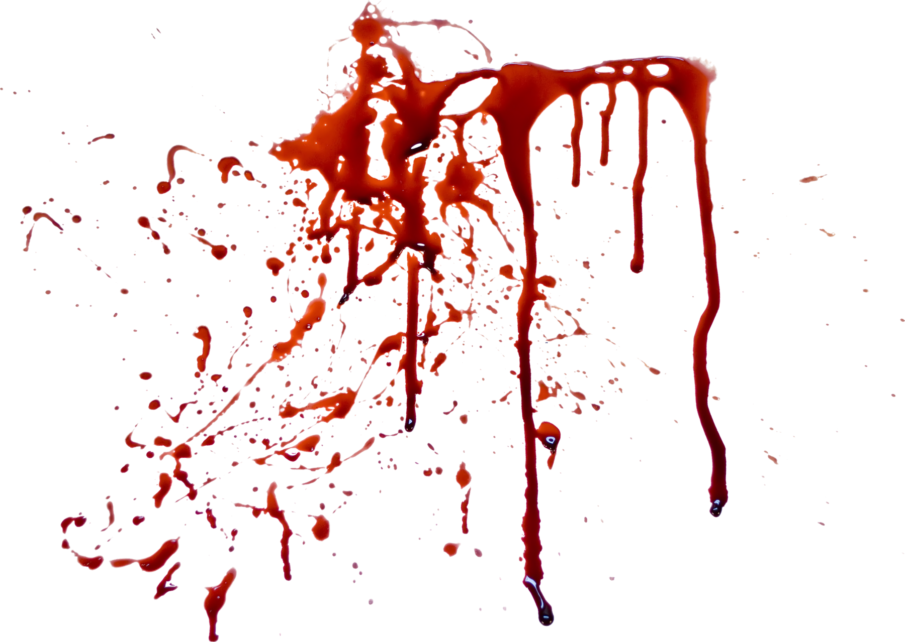

קין
עובד אדמה. מביא מנחה מפרי האדמה.
“לפתח חטאת רובץ, ואליך תשוקתו, ואתה תמשול בו.”
בראשית ד׳, פסוק ז׳
סיפור הרצח הראשון: מה קורה כשהקנאה משתלטת, ומה קורה ברגע שבו אדם עדיין יכול לבחור אחרת.
עובד אדמה. מביא מנחה מפרי האדמה.
רועה צאן. מביא מבכורות צאנו ומחלביהן.
הסיפור קצר, אך משאיר מקום גדול לפרשנות.
העלילה
ציר האירועים מציג את סיפור קין והבל באופן ענייני, קצר וברור.
קין עובד אדמה, הבל רועה צאן.
שניהם מביאים מנחה לאלוהים.
מנחת הבל מתקבלת, מנחת קין אינה מתקבלת.
קין כועס, ואלוהים מזהיר אותו שהחטא “רובץ לפתח”.
קין הורג את הבל בשדה.
קין מתחמק מאחריות, נענש, אך מקבל גם אות הגנה.
נקודת המפנה
המקרא אינו מסביר בפירוש מדוע מנחת הבל התקבלה ומנחת קין לא. דווקא הפער הזה מאפשר להבין שהמוקד המרכזי של הסיפור אינו רק הדחייה, אלא התגובה של קין לדחייה.
על הבל נאמר שהביא “מבכורות צאנו ומחלביהן”, כלומר מן המובחר. על קין נאמר רק שהביא “מפרי האדמה”.
ייתכן שההבדל אינו רק במה שהביאו, אלא בגישה, בכוונה או בלב.
ייתכן שהתורה משאירה את הסיבה פתוחה כדי שנתמקד בשאלה: איך אדם מגיב כשהוא מרגיש דחוי?
ציר הרגשות של קין
בזמן הגלילה אפשר לראות כיצד הרגש של קין הולך ומחריף: מציפייה, דרך דחייה וקנאה, ועד לרגע שבו הוא עדיין יכול לבחור אחרת.
קין מביא מנחה ומצפה להכרה.
מנחתו אינה מתקבלת.
הבל מתקבל, קין לא.
הצלחת הבל הופכת לכאב.
קין כועס על דחיית ה׳ את מנחתו.
קין מגיע לרגע שבו הוא עדיין יכול לעצור.
הרגש הופך למעשה.
רגע הבחירה
הסיפור מדגיש שקין קיבל אזהרה לפני המעשה. לכן האחריות מתחילה כבר ברגע שבו הוא מחליט איך להגיב לכאב שלו.
לא מדובר בשאלה של נכון או לא נכון, אלא בהבנת נקודת הבחירה של קין.
בדיקת הבנה
בכל פעם מופיעה שאלה אחת בלבד. לאחר בחירה, השאלון מתקדם אוטומטית לשאלה הבאה.

“ויקם קין אל הבל אחיו ויהרגהו.”
בראשית ד׳, ח׳
רגע אחד שבו רגש, שלא נעצר בזמן, הופך למעשה שאי אפשר להחזיר לאחור.עונש ואות
קין נענש בכך שהאדמה לא תיתן לו עוד את כוחה, והוא יהיה נע ונד. אבל לצד העונש מופיע גם אות הגנה. כלומר, הסיפור מציג גם דין וגם גבול לנקמה.
עובד האדמה מאבד את הקשר הפשוט אל האדמה שממנה חי.
קין נשאר בחיים, אך חי עם תחושת עקירה וחוסר שייכות.
האות מונע נקמה נוספת ומראה שגם לאחר חטא חמור יש גבול לאלימות.
סיפור קין והבל מלמד שהבעיה אינה עצם הופעתם של רגשות קשים, אלא הבחירה מה לעשות איתם. קין נפגע, מקנא וכועס, אך הסיפור מדגיש שלפני המעשה הייתה לו אפשרות לעצור.
עמוד דיגיטלי על סיפור קין והבל ע"י ברק גרשון, כיתה י״א8
מוגש לשנת 2026 למורה עינת כספי